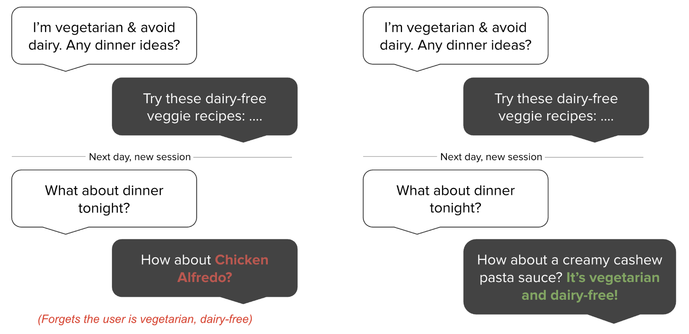
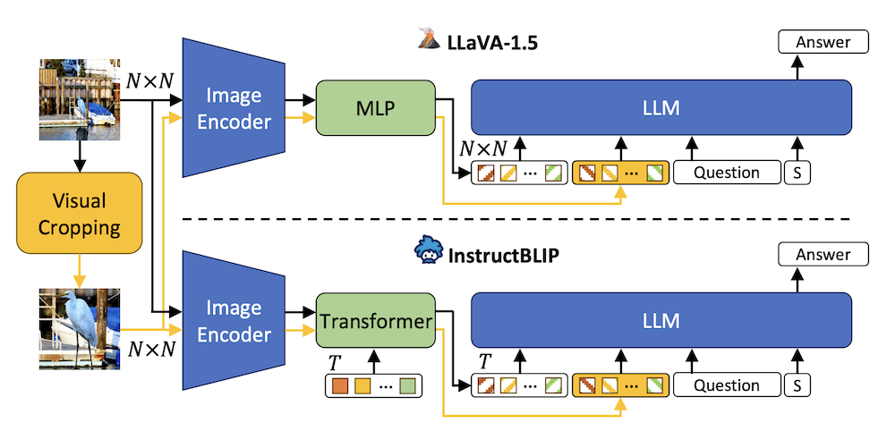

Publications
Selected Publications
|  |
European Conference on Artificial Intelligence (ECAI) -- 2025
Mem0 is a scalable memory-centric architecture that dynamically extracts, consolidates, and retrieves salient conversational information to extend LLM context. Its graph-based variant captures relational structures. On the LOCOMO benchmark, both outperform six baselines—boosting accuracy by up to 26%, while cutting latency by 91% and token cost by over 90%.
|
|  |
International Conference on Learning Representations (ICLR) -- 2025
This work investigates Multimodal Large Language Models' (MLLMs) ability to perceive small versus large visual details in question answering tasks. The study shows that MLLMs' accuracy is sensitive to subject size and can be improved using visual cropping methods. These findings suggest caution and potential improvements for detail-sensitive applications.
|

|
IEEE/CVF Winter Conference on Applications of Computer Vision (WACV) -- 2024
This paper introduces FIRE, a novel multimodal methodology for generating recipes from food images, contributing to the growing field of food computing. FIRE effectively produces food titles, ingredients, and cooking instructions using the BLIP model, a Vision Transformer with a decoder, and the T5 model. The paper also explores practical applications like recipe customization and recipe-to-code generation for automated cooking.
|

|
International Conference on Knowledge Capture (KCap) -- 2023
üèÜ Best Student Paper Award üèÜ
|
|
ACL Workshop on Biomedical Natural Language Processing (BioNLP) -- 2023
This paper explores using pre-trained Language Models (LMs) for assessing mental health risk from social media data. A Question-Answering (QA) approach, utilizing the Unified-QA model, is proposed for analyzing two large mental health datasets. To ensure user privacy, the model is trained with differential privacy techniques. The results show that treating risk assessment as a QA task is effective for mental health scenarios, with minimal performance loss (less than 1%) due to privacy safeguards. This approach signifies a promising direction for creating privacy-conscious diagnostic systems in mental health.
|
|

|
NeurIPS Workshop on Robustness of Few-shot and Zero-shot Learning in Foundation Models -- 2023
This paper examines the limitations of Multimodal Large Language Models (LLMs) in visual question answering (VQA), particularly their sensitivity to the size of visual details in images. The study finds that the zero-shot accuracy of these models decreases by up to 46% with smaller visual subjects. Human visual cropping is shown to mitigate this issue, indicating a causal relationship. The paper proposes three automatic visual cropping methods to enhance zero-shot performance in multimodal LLMs. These methods are evaluated on four VQA datasets and a VQAv2 subset focused on fine details. The results highlight the need for caution in using multimodal LLMs for detail-sensitive VQA tasks and suggest visual cropping as a viable solution for improving performance.
|
|
International Conference on Data Science & Management of Data (CODS-COMAD) -- 2023
This paper presents an automated pipeline for creating 3D virtual tours in real estate, addressing the time and cost challenges of manual annotation in traditional methods. It introduces a novel HSV-based coloring scheme for paper tags, placed in locations before capturing 360° equirectangular images. These tags are uniquely numbered and bi-colored, enhancing tag detection and digit recognition using YOLOv5 and a custom MobileNet architecture, respectively. The method links equirectangular images based on these detected tags, demonstrating its efficiency with a real-world dataset from Housing.com.
|
|
|
European Conference on Machine Learning (ECML) -- 2022
Real-estate image tagging is one of the essential use-cases to save efforts involved in manual annotation and enhance the user experience. This paper proposes an end-to-end pipeline (referred to as RE-Tagger) for the real-estate image classification problem. We present a two-stage transfer learning approach using custom InceptionV3 architecture to classify images into different categories (i.e., bedroom, bathroom, kitchen, balcony, hall, and others).
|
All Publications
You can find all my publications at Google Scholar or ResearchGate.
Conferences / Workshops
CORE A*
International Conference on Learning Representations (ICLR) -- 2025
J Zhang, M Khayatkhoei, P Chhikara, and F Ilievski
NeurIPS Workshop on Robustness of Few-shot and Zero-shot Learning in Foundation Models -- 2023
J Zhang, M Khayatkhoei, P Chhikara, and F Ilievski
ACL Proceedings of the 22nd Workshop on Biomedical Language Processing -- 2023
P Chhikara, U Pasupulety, J Marshall, D Chaurasia, and S Kumari
Proceedings of the 4th ACM MobiCom Workshops -- 2021
P Chhikara, R Tekchandani, N Kumar, and S Tanwar
CORE A
European Conference on Artificial Intelligence (ECAI) -- 2025
P Chhikara, D Khant, S Aryan, T Singh, and D Yadav
IEEE/CVF Winter Conference on Applications of Computer Vision (WACV) -- 2024
P Chhikara, D Chaurasia, Y Jiang, O Masur, and F Ilievski
European Conference on Machine Learning and Principles and Practice of Knowledge Discovery in Databases (ECML-PKDD) -- 2022
P Chhikara, A Goyal, and C Sharma
CORE B
International Conference on Knowledge Capture (KCap) -- 2023
P Chhikara, J Zhang, F Ilievski, J Francis, and K Ma
üèÜ Best Student Paper Award üèÜ


ACM CODS-COMAD -- 2023
P Chhikara, H Kuhar, A Goyal, and C Sharma
IEEE Global Communications Conference (GLOBECOM) -- 2021
P Chhikara, R Tekchandani, N Kumar, S Tanwar, and JJPC Rodrigues
IEEE Globecom Workshops (GC Wkshps) -- 2019
S Arora, S Goel, P Chhikara, H Singh, N Kumar, and PS Rana
Unranked
International Conference on Neurosymbolic Learning and Reasoning (NeSy) -- 2025
BP Allen, P Chhikara, TM Ferguson, F Ilievski, and P Groth
International Conference on Emerging Trends in Information Technology and Engineering -- 2020
P Singh, P Chhikara, and J Singh
Journals
Quartile 1 (Q1)
IEEE Transactions on Network and Service Management -- 2024
A Barnawi, P Chhikara, R Tekchandani, N Kumar, and B Alzahrani
Journal of Visual Communication and Image Representation -- 2024
D Chaurasia and P Chhikara
IEEE Internet of Things Journal -- 2021
P Chhikara, R Tekchandani, N Kumar, M Guizani, and MM Hassan
Future Generation Computer Systems -- 2021
A Barnawi, P Chhikara, R Tekchandani, N Kumar, and B Alzahrani
IEEE Internet of Things Journal -- 2020
P Chhikara, R Tekchandani, N Kumar, V Chamola, and M Guizani
IEEE Internet of Things Journal -- 2020
P Chhikara, P Singh, R Tekchandani, N Kumar, and M Guizani
IEEE Internet of Things Journal -- 2020
P Chhikara, R Tekchandani, N Kumar, and MS Obaidat
Quartile 2 (Q2)
Computing -- 2023
P Chhikara, R Tekchandani, and N Kumar
Multimedia Systems -- 2021
A Barnawi, P Chhikara, R Tekchandani, N Kumar, and M Boulares
Software: Practice and Experience -- 2020
P Chhikara, N Jain, R Tekchandani, and N Kumar
Quartile 3 (Q3)
Turkish Journal of Electrical Engineering and Computer Sciences -- 2021
P Chhikara, P Gupta, P Singh, and T Bhatia
Book Chapter
Advances in Bioinformatics, Multimedia, and Electronics Circuits and Signals -- 2019
P Chhikara, P Singh, P Gupta, and T Bhatia